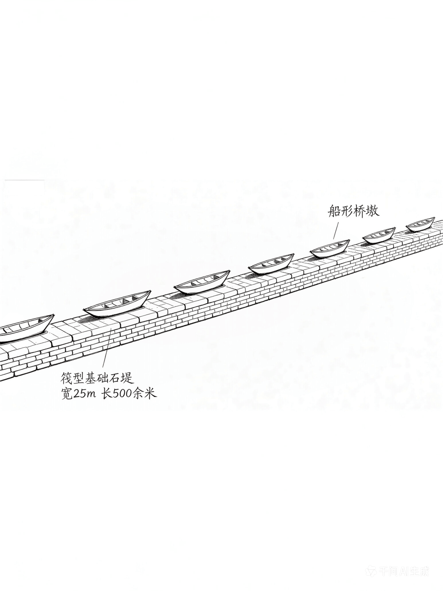
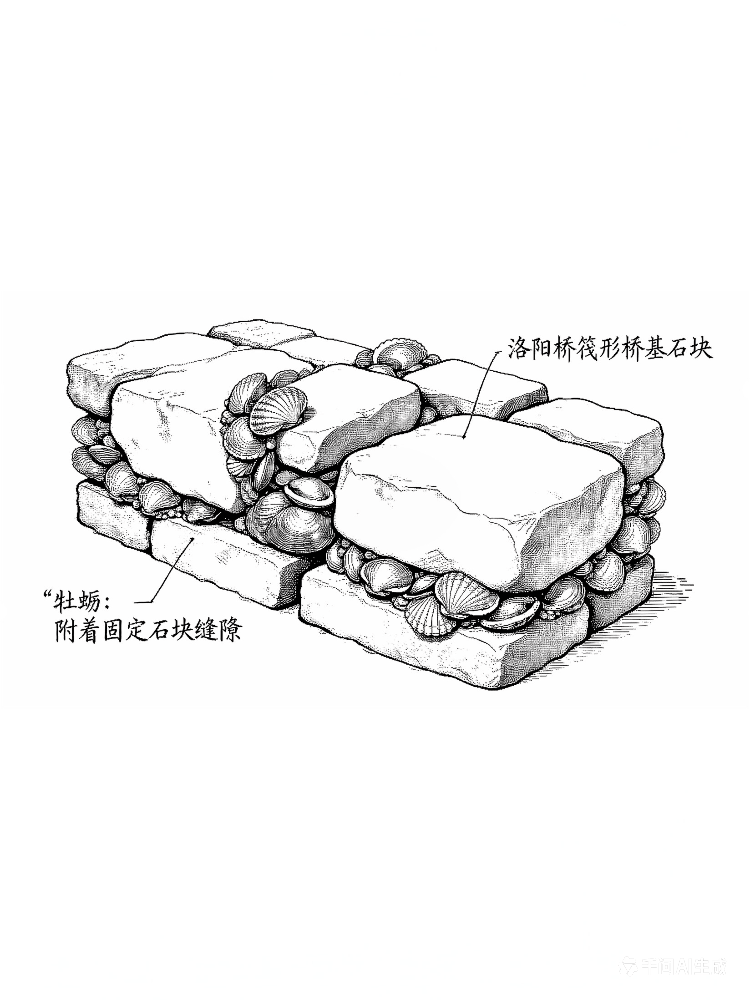
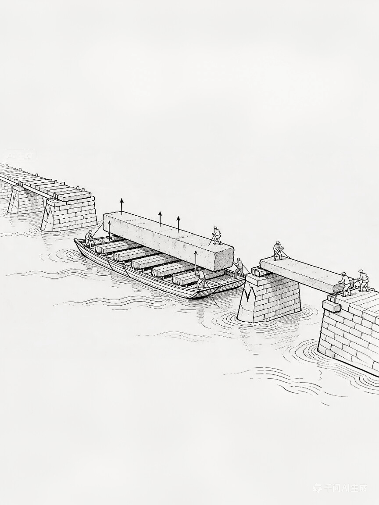
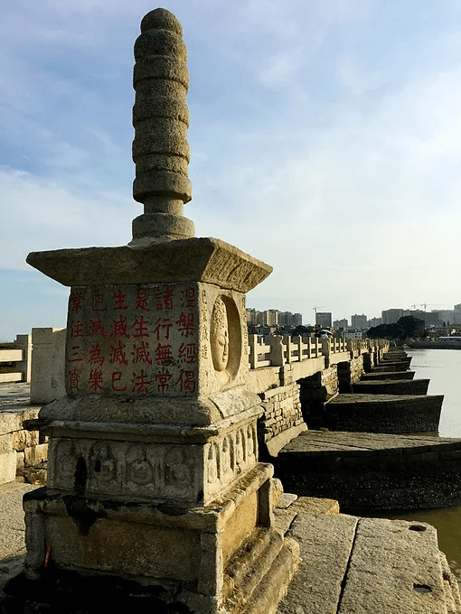
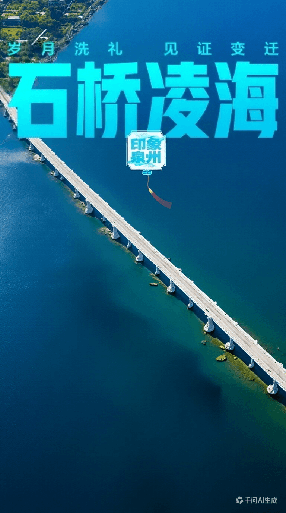
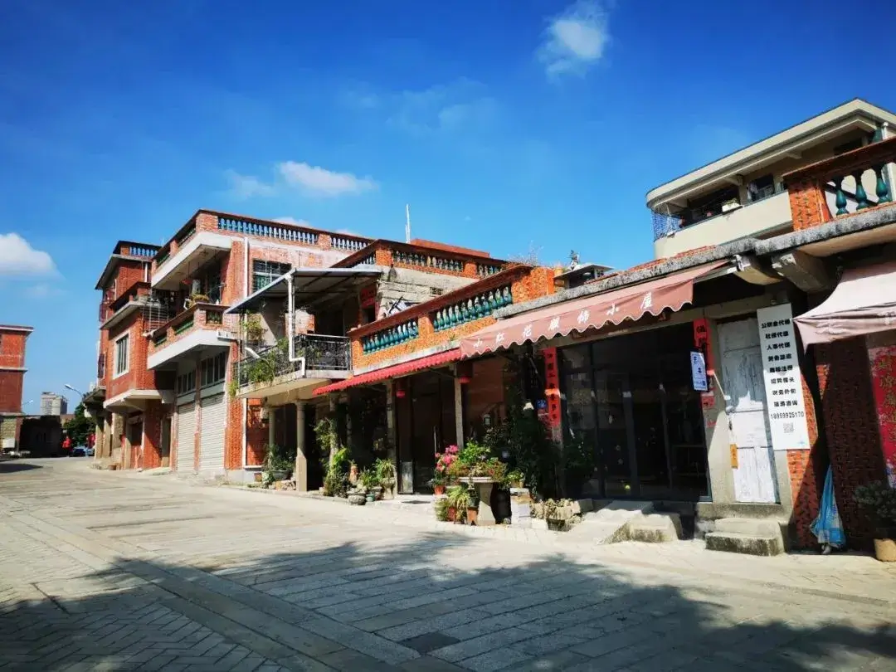

船形桥基分水破浪，世界首创生物学与工程学结合，千年稳固。

利用牡蛎加固桥基，全球首个生物工程技术应用，至今坚固。

借潮汐之力架设石梁，巧妙利用自然，展现古人智慧。

蔡襄亲撰"三绝碑"，文、书、刻俱佳，文化遗产瑰宝。

石狮、石象望柱，宋代石雕艺术巅峰，历经风雨威严。
中国最早跨海石桥，世界文化遗产核心点，泉州骄傲。

桥畔千年古街，海丝商贸见证，人间烟火不息。

点击进入全景3D浏览模式